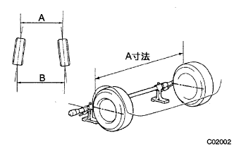

リヤホイールアライメント 点検 |
| 1. タイヤ点検 |
| 2. 車高点検 |
| 3. トーイン点検 |
車両をゆすり、車両を安定させる。
車両を直進で5ｍ手押しして前進させる。
 |
トーインゲージの指針高さを必ずリヤホイール軸中心高さに合わせる。
後輪タイヤ各々の後部にトレッドセンターをしるし、マーク間の距離(B寸法)を測定する。
車両をゆっくり押して前進させ、後輪を180°回転させる。
|  |
後輪タイヤ前部でマーク間の距離(A寸法)を計測する。
トーインを求める。
| 4. キャンバー点検 |
ホイールキャップを取りはずす。
車両を平坦な場所でリフトアップする。
SST(タイヤクランプコンペンセータ)を取り付ける。
タイヤクランプコンペンセータのクランプダイヤルを回し、クランプアームを広げる。
 |
ダイヤルを回し、下側ツメ2箇所をホイールサイズに合わせる。
ホイールリム下部に当てて、上側ツメをホイールリムに合わせて縮める。
 |
クランプダイヤルを回し、タイヤクランプアームを縮めタイヤに取り付ける。
脱落防止ワイヤーをホイールのエアーバルブに取り付ける。
タイヤクランプコンペンセータを補正する。
タイヤクランプコンペンセータの補正ダイヤルを回してメカゼロライン(赤ライン)の範囲内に合わせる。
 |
キャンバーキャスターキングピンゲージをタイヤクランプコンペンセータの取り付けプレートに取り付け、合わせマークを合わせる。
ホイールを少し回転させ、キャンバーキャスターキングピンゲージの水平気泡が中心になるように合わせ、キャンバーキャスターキングピンゲージの調整ネジでキャスター気泡を0°に合わせる。
ホイールを180°回転させ、キャンバーキャスターキングピンゲージとタイヤクランプコンペンセータの合わせマークを合わせ、水平気泡を合わせる。(*1)
上記状態のキャスター気泡を読み取り、その値の1/2の目盛りになるようにタイヤクランプコンペンセータの補正ダイヤルを回し合わせる。(*2)
前記(*1)、(*2)の手順を繰り返し、キャスター気泡の目盛り位置がホイールを180°正、反転させても、一定の数値目盛りを指示すればキャンバーキャスターキングピンゲージのセットは完了。
車両を降ろす。
キャンバーを点検する。
キャンバーキャスターキングピンゲージおよびタイヤクランプコンペンセータを取りはずす。
ホイールキャップを取り付ける。